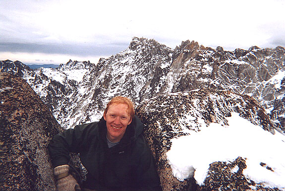
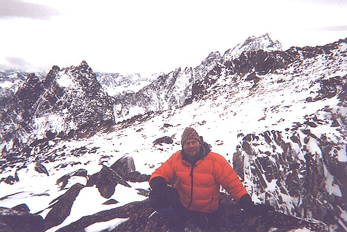

Colchuck Peak (Attempt)
Friday afternoon, a friend called to talk about Colchuck Peak, saying “The glacier should have hard water ice, and slopes about 40 to 45 degrees for 400 feet. Yeah, I’ll bring some ice screws, and you bring yourself an ice tool in addition to ax and crampons.”
“Okay, sounds great!” Gulp.
On Saturday Kris, Marco and I stopped by Peter’s apartment to borrow his X-15 hammerhead ice tool. I hefted it experimentally, excited and apprehensive to use such a wicked instrument for the first time. Unlike a traditional ice ax, an ice tool looks like a device from a science fiction movie, probably carried by bloodthirsty aliens. The pick is sharp, and droops audaciously. The instrument is meant to be held and swung like a hammer, compact and powerful. The experience of climbing steep snow and ice faces with tools like these was romanticized and distorted in my mind by dozens of stories, many of them grim. As I tried to sleep Saturday night, my mind kept envisioning difficult ice down-climbs in blowing snow. I finally ended up reading a book, giving up on sleep as an option. Apparently, my mind was quite bent out of shape over this new experience!


Alex K. was able to join us, and he picked me up at 4:00 am Sunday. We would meet some friends at the trail-head. I kissed Kris goodbye, still up working on a web page, and we drove over Steven’s Pass, disheartened by the rain and snow. The sky cleared as we headed south and east. At the trail-head we had high clouds and patches of sky, beautiful pink and orange in the sunrise. We waited until 7:00 for the others, then headed up alone. Alex had climbed Colchuck Peak at least once, and assured me the terrain wasn’t difficult enough for a second tool, much less a rope. Uncertain, I brought the X-15, and we took turns carrying the rope.
Trace amounts of crunchy snow lined the trail we followed in the gently rising valley. The snow increased with the angle as we wandered up and left to Colchuck Lake. It had taken 1:45 to here. The view was dominated by Dragontail Peak - a glowering fortress of black ridges and towers. Sinewous fingers of snow ran like capillaries across it’s broad, shattered bulk. Alex had climbed the Triple Colouirs and the Serpentine Arete, two excellent routes on this fantastic mountain. Our goal for today lay to the right of it, across a narrow saddle and up a shattered ridge. Below the saddle was a snowy moraine and a smooth, white glacier. Aside from some crevasses on the right, this looked easy. The really impressive glacier was right below the rock walls of Colchuck. Crumbling blocks of ice would provide an adventure over there for someone else.
We rounded the lake, greeting some hardy campers from the Buckeye state. The going got tough as we tottered up snow-covered boulders to the moraine. They were slippery and filled with land mines. Stepping on a patch of snow between boulders might provide nice footing, or it might quickly accept your entire leg, leaving you dangling awkwardly above a cave in the snow. We crested a rise, leaving the boulders for deep snow. Alex ploughed straight up a moderately steep slope to gain the morainal ridge. This was a good idea, since snow blew off of there to fill the bowl we climbed. We would have shallow snow. But it was very hard work getting up there, and Alex bulldogged the whole thing. Some high wind and welcome icy rock was preferable to the deep snow, and we followed the ridge until it ran out at the glacier.
Alex started up while I put on a sweater and windproof gloves. My fingers had gotten too cold, and it took a painful 20 minutes to warm them as I climbed. By the time I caught up to him, we had passed much of the water ice section of the glacier, and the worst of the post-holing. The ice was very hard and slippery, but there was just enough surface snow to make crampons unnecessary. Also, the angle was very low. I laughed at my apprehensions of the night, and keenly felt the sleep debt! We passed crevasses on our left, but they were quite filled in with snow and harmless. The final stretch of the glacier took a long time, but finally we stood at the saddle. Alex pointed out the improbable Boving route, a difficult crack and face climb on Dragontail.
Alex made his way up the ridge and I followed on the mixture of deep snow, boulders and ledges. We had an exciting look down a snowy colouir as we climbed past an exposed notch. If you climb over the little tree, it’s third class! We continued, slowing down in the deep snow. At one point, everywhere I stepped caused the snow to collapse to my level. I tried to “swim” on the snow by rolling onto it with knees, chest and elbows, but not even this worked! Finally a traverse to a rocky ledge provided an out. However, the bouldering and conditions were fun in a way. It was awesome that the clouds were still high, although dropping to obscure mountains in the west.
We reached the summit, and Alex said “oh!” pointing out the true summit down across and up, probably 50 feet above us. With this snow, we knew how long it would take to get over there. It was 1 pm already, so we made this our high point. Alex’s camera had two pictures, so we each picked our portrait backdrops. Alex had the view over to Stuart and Argonaut. I had the walls of Dragontail. Immediately we headed down, taking only an hour to get to the boulders 300 feet above the lake. There was a bitter, stinging wind at the saddle, then unnerving slips on the water ice, but mostly deep plunge steps in the snow. Alex heard a voice and saw someone coming up the boulders, then lost the shadowy figure. Just as he decided it must have been a hallucination, I heard something and said “Hello?” to the cold rocks below. “Hey, Michael!” they said back. Someone we knew had shown up, and we had an impromptu conversation on the slope. We resumed the trip down and around the lake.
The long slog down began, and the light gradually dimmed. There was a lot to talk about, so things went quickly. Only the last mile seemed to last too long, as usual! I kept seeing cars in the river rocks. Just when I really wished I had a headlamp, we reached the parking lot. Beer and food from the Brewpub was sorely needed and much appreciated!
Thanks to Alex for the ride and great companionship! We had excellent music on the way home.